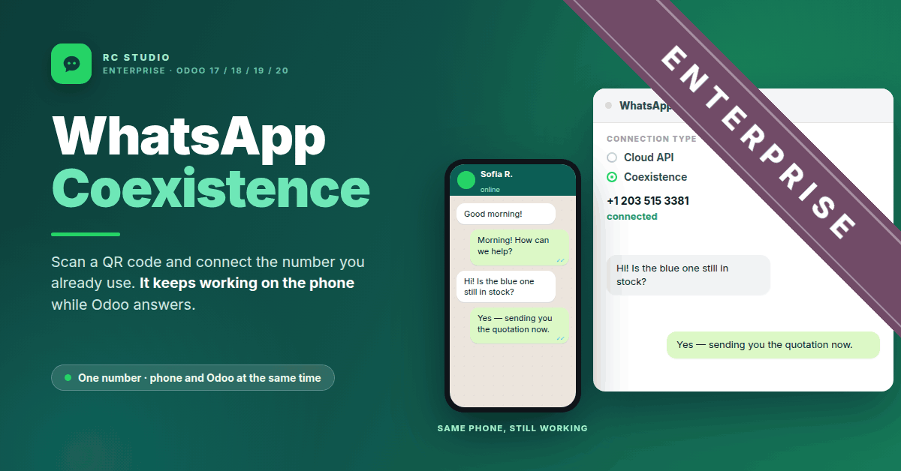
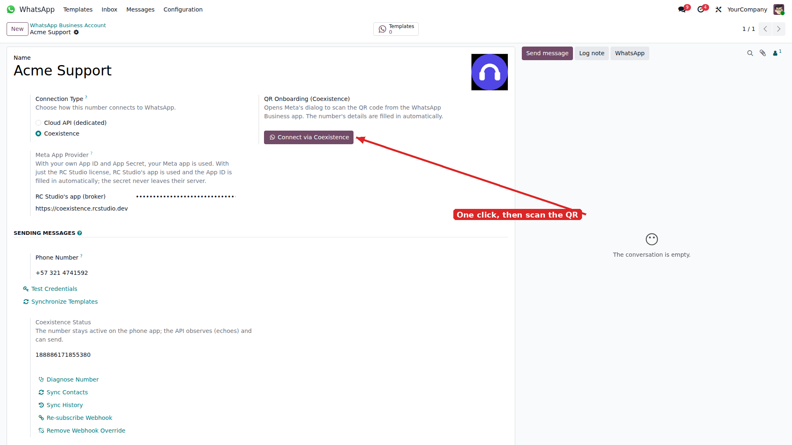
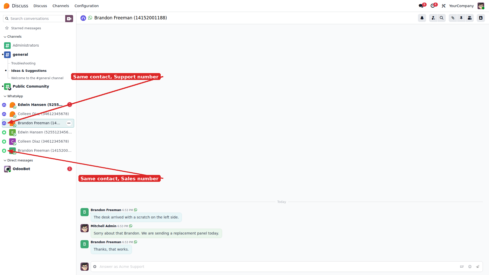
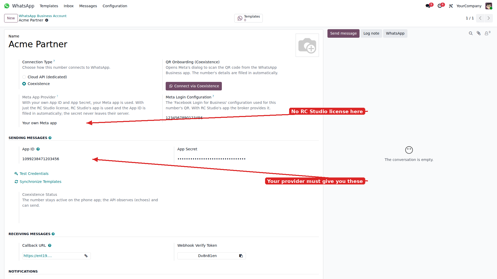
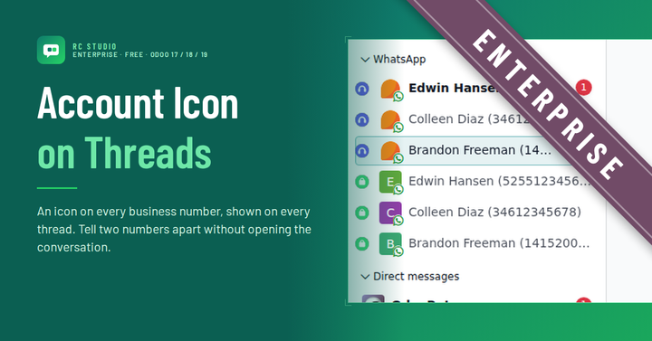
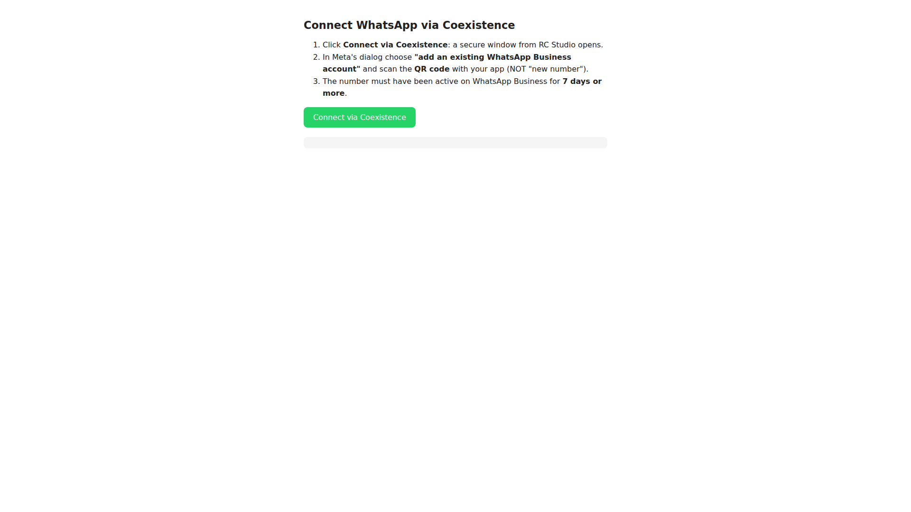
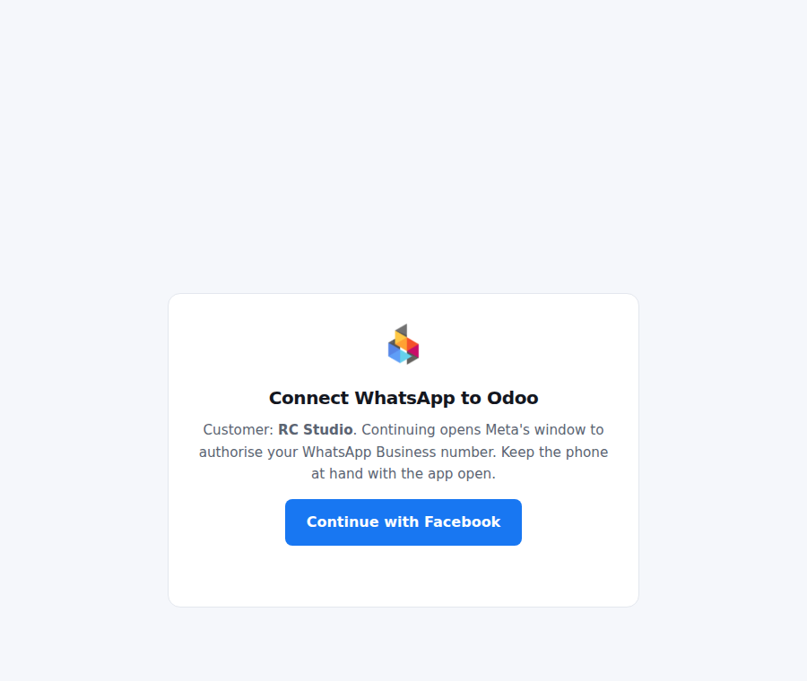
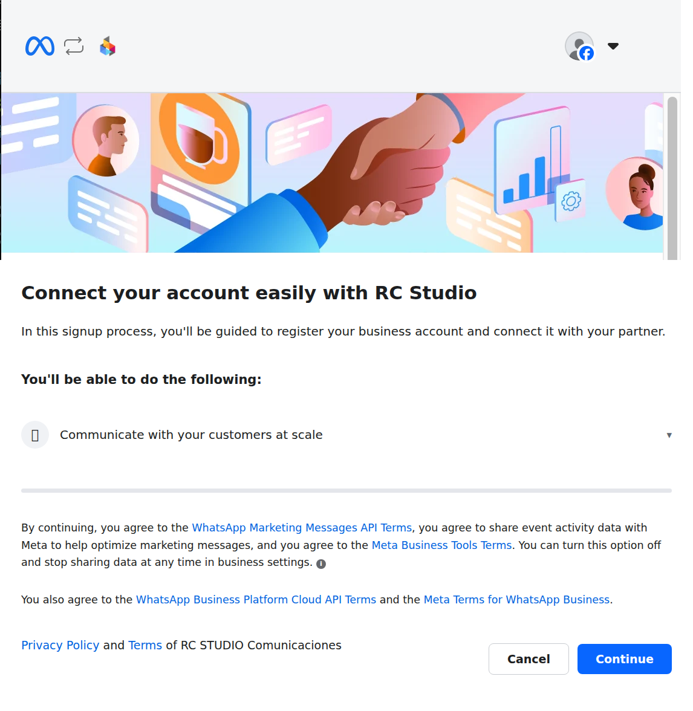

<!-- whatsapp_coexistence | static/description/index.html | RC Studio -->
<section>
<div style="max-width:1000px;margin:0 auto;font-family:-apple-system,'Segoe UI',Roboto,sans-serif;color:#111827;background-color:#ffffff;padding:16px 16px 24px;border-radius:12px;">

  

  <table class="mb-3" style="width:100%;border-collapse:collapse;background-color:#714B67;border-radius:12px;"><tr><td style="padding:18px 8px 18px 26px;width:1%;white-space:nowrap;vertical-align:middle;"><span style="font-size:30px;font-weight:800;letter-spacing:.16em;color:#ffffff;line-height:1;">ENTERPRISE</span></td><td style="padding:18px 26px 18px 18px;vertical-align:middle;"><div style="font-size:20px;font-weight:700;color:#ffffff;line-height:1.3;">Requires Odoo Enterprise 17, 18, 19 or 20</div><div style="font-size:15px;color:#F3E8FF;line-height:1.5;margin-top:4px;">It extends Odoo&rsquo;s native WhatsApp app, which only exists in Enterprise. It does not install on Odoo Community.</div></td></tr></table>
    <div class="mb-4" style="background-color:#115E59;border-radius:12px;padding:38px 36px;">
    <div style="font-size:12px;letter-spacing:.14em;text-transform:uppercase;color:#25D366;font-weight:700;margin-bottom:12px;">RC Studio &middot; Enterprise &middot; Odoo 17 / 18 / 19 / 20</div>
    <h1 style="font-size:38px;line-height:1.15;font-weight:700;color:#ffffff;margin:0 0 14px;">WhatsApp Coexistence</h1>
    <p style="font-size:19px;line-height:1.55;color:#D1FAE5;margin:0 0 24px;max-width:46em;">Add a Coexistence connection type to Odoo&rsquo;s WhatsApp app: connect the number you already use on your phone by scanning a QR code.</p>
    <div class="row"><div class="col-md-3 col-6 mb-2"><div style="border-left:3px solid #25D366;padding-left:12px;">
<div style="font-size:15px;font-weight:700;color:#ffffff;line-height:1.35;">Extends Odoo&rsquo;s WhatsApp app</div>
<div style="font-size:13px;color:#A7F3D0;line-height:1.4;">Enterprise &middot; Odoo.sh or on-premise</div></div></div><div class="col-md-3 col-6 mb-2"><div style="border-left:3px solid #25D366;padding-left:12px;">
<div style="font-size:15px;font-weight:700;color:#ffffff;line-height:1.35;">QR onboarding</div>
<div style="font-size:13px;color:#A7F3D0;line-height:1.4;">No SMS, no new number</div></div></div><div class="col-md-3 col-6 mb-2"><div style="border-left:3px solid #25D366;padding-left:12px;">
<div style="font-size:15px;font-weight:700;color:#ffffff;line-height:1.35;">Phone keeps working</div>
<div style="font-size:13px;color:#A7F3D0;line-height:1.4;">The number is never migrated away</div></div></div><div class="col-md-3 col-6 mb-2"><div style="border-left:3px solid #25D366;padding-left:12px;">
<div style="font-size:15px;font-weight:700;color:#ffffff;line-height:1.35;">One-time import</div>
<div style="font-size:13px;color:#A7F3D0;line-height:1.4;">Contacts and 6 months of history</div></div></div></div>
    <div style="margin-top:22px;padding-top:18px;border-top:1px solid rgba(255,255,255,.2);"><span style="display:inline-block;background-color:#25D366;color:#064E3B;font-size:12px;font-weight:800;letter-spacing:.12em;border-radius:4px;padding:4px 10px;vertical-align:middle;">8 LANGUAGES</span><span style="font-size:16px;color:#ffffff;line-height:1.6;margin-left:12px;vertical-align:middle;">Available in <b>English</b>, <b>Spanish</b>, <b>German</b>, <b>French</b>, <b>Portuguese</b> (Portugal and Brazil), <b>Italian</b> and <b>Arabic</b> &mdash; right-to-left included.</span></div>
  </div>

  <div class="mb-4" style="border-bottom:2px solid #E5E7EB;">
<ul class="nav nav-tabs" role="tablist" style="border-bottom:none;">
<li class="nav-item" role="presentation"><a class="nav-link active" data-bs-toggle="tab" href="#rcs-coex-ent-overview" role="tab" style="font-size:16px;font-weight:700;color:#115E59;padding:12px 20px;border-radius:8px 8px 0 0;">Overview</a></li><li class="nav-item" role="presentation"><a class="nav-link" data-bs-toggle="tab" href="#rcs-coex-ent-setup" role="tab" style="font-size:16px;font-weight:700;color:#115E59;padding:12px 20px;border-radius:8px 8px 0 0;">Setup</a></li><li class="nav-item" role="presentation"><a class="nav-link" data-bs-toggle="tab" href="#rcs-coex-ent-manual" role="tab" style="font-size:16px;font-weight:700;color:#115E59;padding:12px 20px;border-radius:8px 8px 0 0;">User manual</a></li><li class="nav-item" role="presentation"><a class="nav-link" data-bs-toggle="tab" href="#rcs-coex-ent-faq" role="tab" style="font-size:16px;font-weight:700;color:#115E59;padding:12px 20px;border-radius:8px 8px 0 0;">FAQ</a></li><li class="nav-item" role="presentation"><a class="nav-link" data-bs-toggle="tab" href="#rcs-coex-ent-support" role="tab" style="font-size:16px;font-weight:700;color:#115E59;padding:12px 20px;border-radius:8px 8px 0 0;">Support</a></li>
</ul></div>
  <div class="tab-content"><div class="tab-pane fade show active" id="rcs-coex-ent-overview" role="tabpanel"><div class="mb-4" style="background-color:#EFF6FF;border:1px solid #3B82F6;border-left:4px solid #3B82F6;border-radius:8px;padding:20px 22px;">
<div style="font-size:18px;font-weight:700;color:#111827;margin:0 0 10px;">Where this module runs</div><p style="font-size:16px;line-height:1.65;color:#374151;margin:0 0 12px;"><b>Odoo.sh and on-premise.</b> Not available on Odoo Online.</p><p style="font-size:16px;line-height:1.65;color:#374151;margin:0;">The Odoo instance must be reachable from the public internet over HTTPS, because Meta delivers inbound messages to a webhook on your own domain.</p></div><h2 style="font-size:28px;font-weight:700;color:#111827;margin:0 0 14px;line-height:1.2;">Keep your number on the phone. Add Odoo on top.</h2><p style="font-size:18px;line-height:1.6;color:#374151;margin:0 0 20px;">The normal way into the WhatsApp Cloud API asks you to give up your number: once it is migrated, it stops working in the WhatsApp Business app on the phone. For a business whose whole sales history lives in that app, that is a deal breaker.</p><p style="font-size:16px;line-height:1.65;color:#374151;margin:0 0 16px;">Coexistence is Meta&rsquo;s official answer, and this module brings it to Odoo. You scan a QR code, and from that moment the same number works in both places at once: your staff keep replying from the phone, and Odoo sees everything.</p><div class="mb-4"><div style="font-size:13px;color:#6B7280;margin-top:8px;">Odoo&rsquo;s native WhatsApp Business Account form, with the Coexistence connection type added.</div></div><div class="row mb-4">
<div class="col-md-6 col-12 mb-3"><div class="h-100" style="border:1px solid #E5E7EB;border-radius:8px;padding:20px;">
<div style="font-size:12px;letter-spacing:.12em;text-transform:uppercase;color:#115E59;font-weight:700;margin:0 0 8px;">Native connection</div><div style="font-size:19px;font-weight:700;color:#111827;margin:0 0 14px;">Dedicated Cloud API</div>
<div style="font-size:15px;line-height:1.5;color:#6B7280;border-left:3px solid #D1D5DB;padding-left:12px;margin-bottom:10px;">Full control of the outgoing message.</div><div style="font-size:15px;line-height:1.5;color:#6B7280;border-left:3px solid #D1D5DB;padding-left:12px;margin-bottom:10px;">The number <b>leaves</b> the phone app.</div><div style="font-size:15px;line-height:1.5;color:#6B7280;border-left:3px solid #D1D5DB;padding-left:12px;margin-bottom:10px;">The team loses its usual way to reply.</div><div style="font-size:15px;line-height:1.5;color:#6B7280;border-left:3px solid #D1D5DB;padding-left:12px;margin-bottom:10px;">Migration with SMS verification.</div></div></div>
<div class="col-md-6 col-12 mb-3"><div class="h-100" style="border:1px solid #25D366;border-radius:8px;padding:20px;background-color:#F0FDF4;">
<div style="font-size:12px;letter-spacing:.12em;text-transform:uppercase;color:#115E59;font-weight:700;margin:0 0 8px;">This module</div><div style="font-size:19px;font-weight:700;color:#111827;margin:0 0 14px;">Coexistence</div>
<div style="font-size:15px;line-height:1.5;color:#1F2937;border-left:3px solid #25D366;padding-left:12px;margin-bottom:10px;">The number <b>stays on the phone</b>.</div><div style="font-size:15px;line-height:1.5;color:#1F2937;border-left:3px solid #25D366;padding-left:12px;margin-bottom:10px;">Odoo receives inbound and phone <b>echoes</b>.</div><div style="font-size:15px;line-height:1.5;color:#1F2937;border-left:3px solid #25D366;padding-left:12px;margin-bottom:10px;">Sign-up by <b>QR</b>, in seconds.</div><div style="font-size:15px;line-height:1.5;color:#1F2937;border-left:3px solid #25D366;padding-left:12px;margin-bottom:10px;">Everything lands in <b>Discuss</b>, like the native.</div></div></div></div><h2 style="font-size:28px;font-weight:700;color:#111827;margin:0 0 14px;line-height:1.2;">How it works</h2><ul style="font-size:16px;line-height:1.7;color:#374151;margin:0 0 18px;padding-left:22px;"><li style="margin-bottom:7px;">Messages your team types on the phone appear in Odoo as outbound messages in the customer's thread, so the conversation history is complete.</li><li style="margin-bottom:7px;">Messages customers send arrive in Odoo through the webhook, exactly like a dedicated Cloud API number.</li><li style="margin-bottom:7px;">Odoo can send too: replies inside the 24-hour window and approved templates.</li><li style="margin-bottom:7px;">Your contacts and up to six months of history can be imported once, at onboarding, using Meta's one-time sync.</li></ul><h2 style="font-size:28px;font-weight:700;color:#111827;margin:0 0 14px;line-height:1.2;">What you get</h2><div class="row"><div class="col-md-6 col-12 mb-3"><div class="h-100" style="border:1px solid #E5E7EB;border-radius:8px;padding:18px 20px;background-color:#ffffff;">
<div style="font-size:28px;line-height:1.1;margin-bottom:8px;">&#128241;</div>
<div style="font-size:16px;font-weight:700;color:#111827;margin-bottom:4px;">The number stays on the phone</div>
<div style="font-size:14px;line-height:1.55;color:#6B7280;">Your team keeps replying from the WhatsApp Business app. Nothing is migrated away.</div></div></div><div class="col-md-6 col-12 mb-3"><div class="h-100" style="border:1px solid #E5E7EB;border-radius:8px;padding:18px 20px;background-color:#ffffff;">
<div style="font-size:28px;line-height:1.1;margin-bottom:8px;">&#128273;</div>
<div style="font-size:16px;font-weight:700;color:#111827;margin-bottom:4px;">QR onboarding</div>
<div style="font-size:14px;line-height:1.55;color:#6B7280;">Meta&rsquo;s Embedded Signup inside Odoo. No SMS, no new number, no IDs to type by hand.</div></div></div><div class="col-md-6 col-12 mb-3"><div class="h-100" style="border:1px solid #E5E7EB;border-radius:8px;padding:18px 20px;background-color:#ffffff;">
<div style="font-size:28px;line-height:1.1;margin-bottom:8px;">&#128260;</div>
<div style="font-size:16px;font-weight:700;color:#111827;margin-bottom:4px;">Phone replies mirrored in Odoo</div>
<div style="font-size:14px;line-height:1.55;color:#6B7280;">Outbound echoes land in the same thread, deduplicated by message id, so nothing shows twice.</div></div></div><div class="col-md-6 col-12 mb-3"><div class="h-100" style="border:1px solid #E5E7EB;border-radius:8px;padding:18px 20px;background-color:#ffffff;">
<div style="font-size:28px;line-height:1.1;margin-bottom:8px;">&#128172;</div>
<div style="font-size:16px;font-weight:700;color:#111827;margin-bottom:4px;">Everything in Discuss</div>
<div style="font-size:14px;line-height:1.55;color:#6B7280;">Inbound and outbound in regular Discuss channels, on regular res.partner contacts.</div></div></div><div class="col-md-6 col-12 mb-3"><div class="h-100" style="border:1px solid #E5E7EB;border-radius:8px;padding:18px 20px;background-color:#ffffff;">
<div style="font-size:28px;line-height:1.1;margin-bottom:8px;">&#128228;</div>
<div style="font-size:16px;font-weight:700;color:#111827;margin-bottom:4px;">One-time history import</div>
<div style="font-size:14px;line-height:1.55;color:#6B7280;">Contacts and up to six months of conversations, imported at onboarding.</div></div></div><div class="col-md-6 col-12 mb-3"><div class="h-100" style="border:1px solid #E5E7EB;border-radius:8px;padding:18px 20px;background-color:#ffffff;">
<div style="font-size:28px;line-height:1.1;margin-bottom:8px;">&#9881;&#65039;</div>
<div style="font-size:16px;font-weight:700;color:#111827;margin-bottom:4px;">Zero webhook config</div>
<div style="font-size:14px;line-height:1.55;color:#6B7280;">The account generates its own Callback URL and Verify Token and subscribes itself.</div></div></div>
      <div class="col-md-6 col-12 mb-3"><div class="h-100" style="border:1px solid #E5E7EB;border-radius:8px;padding:18px 20px;background-color:#ffffff;"><div style="font-size:28px;line-height:1.1;margin-bottom:8px;">&#128737;&#65039;</div><div style="font-size:16px;font-weight:700;color:#111827;margin-bottom:4px;">Meta delivers straight to your Odoo</div><div style="font-size:14px;line-height:1.55;color:#6B7280;">No message, media file or status passes through RC Studio: its service only takes part while the number is being connected.</div></div></div><div class="col-md-6 col-12 mb-3"><div class="h-100" style="border:1px solid #E5E7EB;border-radius:8px;padding:18px 20px;background-color:#ffffff;">
<div style="font-size:28px;line-height:1.1;margin-bottom:8px;">&#128290;</div>
<div style="font-size:16px;font-weight:700;color:#111827;margin-bottom:4px;">Several numbers, one database</div>
<div style="font-size:14px;line-height:1.55;color:#6B7280;">Each number is its own account, with its own users and company restriction.</div></div></div><div class="col-md-6 col-12 mb-3"><div class="h-100" style="border:1px solid #E5E7EB;border-radius:8px;padding:18px 20px;background-color:#ffffff;">
<div style="font-size:28px;line-height:1.1;margin-bottom:8px;">&#127760;</div>
<div style="font-size:16px;font-weight:700;color:#111827;margin-bottom:4px;">Eight languages</div>
<div style="font-size:14px;line-height:1.55;color:#6B7280;">English, Spanish, French, German, Portuguese (Portugal and Brazil), Italian and Arabic, right-to-left included.</div></div></div></div><h2 style="font-size:28px;font-weight:700;color:#111827;margin:0 0 14px;line-height:1.2;">A tour in three screens</h2><p style="font-size:16px;line-height:1.65;color:#374151;margin:0 0 16px;">From the connection type to the mirrored conversation.</p><div id="rcs-coex-ent-gal" class="mb-4"><div class="tab-content" style="border:1px solid #E5E7EB;border-radius:8px;overflow:hidden;background-color:#F9FAFB;">
<div class="tab-pane fade show active" id="rcs-coex-ent-gal-1" role="tabpanel"><div style="background-color:#115E59;padding:10px 16px;font-size:15px;font-weight:700;color:#ffffff;line-height:1.4;">Odoo&rsquo;s native account form, with the Coexistence connection type added</div></div>
<div class="tab-pane fade" id="rcs-coex-ent-gal-2" role="tabpanel"><div style="background-color:#115E59;padding:10px 16px;font-size:15px;font-weight:700;color:#ffffff;line-height:1.4;">Phone replies mirrored into the same Discuss channel</div></div>
<div class="tab-pane fade" id="rcs-coex-ent-gal-3" role="tabpanel"><div style="background-color:#115E59;padding:10px 16px;font-size:15px;font-weight:700;color:#ffffff;line-height:1.4;">Coexistence without an RC Studio licence, on your own provider&rsquo;s credentials</div></div>
</div>
<ul class="nav nav-pills mt-2" role="tablist" style="gap:6px;">
<li class="nav-item" role="presentation"><a class="nav-link active" data-bs-toggle="tab" href="#rcs-coex-ent-gal-1" role="tab" style="font-size:13px;font-weight:700;padding:6px 14px;border:1px solid #E5E7EB;border-radius:20px;">1 &middot; Account form</a></li>
<li class="nav-item" role="presentation"><a class="nav-link" data-bs-toggle="tab" href="#rcs-coex-ent-gal-2" role="tab" style="font-size:13px;font-weight:700;padding:6px 14px;border:1px solid #E5E7EB;border-radius:20px;">2 &middot; Phone replies in Discuss</a></li>
<li class="nav-item" role="presentation"><a class="nav-link" data-bs-toggle="tab" href="#rcs-coex-ent-gal-3" role="tab" style="font-size:13px;font-weight:700;padding:6px 14px;border:1px solid #E5E7EB;border-radius:20px;">3 &middot; Own provider</a></li>
</ul><div style="font-size:13px;color:#6B7280;margin-top:6px;">Click a step to see it.</div></div><h2 style="font-size:28px;font-weight:700;color:#111827;margin:0 0 14px;line-height:1.2;">Requirements</h2><div class="mb-4" style="border:1px solid #E5E7EB;border-radius:8px;overflow:hidden;">
<table class="w-100" style="border-collapse:collapse;font-size:15px;"><tr style="background-color:#F9FAFB;">
<td style="padding:12px 16px;border-bottom:1px solid #E5E7EB;font-weight:700;color:#111827;width:34%;vertical-align:top;">Hosting</td>
<td style="padding:12px 16px;border-bottom:1px solid #E5E7EB;color:#374151;">Odoo.sh or on-premise. Not available on Odoo Online.</td></tr><tr style="background-color:#ffffff;">
<td style="padding:12px 16px;border-bottom:1px solid #E5E7EB;font-weight:700;color:#111827;width:34%;vertical-align:top;">Native whatsapp module</td>
<td style="padding:12px 16px;border-bottom:1px solid #E5E7EB;color:#374151;">Odoo&rsquo;s own WhatsApp app (Enterprise) installed. This module adds a connection type to the existing WhatsApp Business Account form; everything else in Odoo&rsquo;s WhatsApp app keeps working unchanged.</td></tr><tr style="background-color:#F9FAFB;">
<td style="padding:12px 16px;border-bottom:1px solid #E5E7EB;font-weight:700;color:#111827;width:34%;vertical-align:top;">Tech Provider app</td>
<td style="padding:12px 16px;border-bottom:1px solid #E5E7EB;color:#374151;">An app approved by Meta for WhatsApp Business App Onboarding &mdash; RC Studio&rsquo;s, yours, or a third party&rsquo;s.</td></tr><tr style="background-color:#ffffff;">
<td style="padding:12px 16px;border-bottom:1px solid #E5E7EB;font-weight:700;color:#111827;width:34%;vertical-align:top;">Public HTTPS URL</td>
<td style="padding:12px 16px;border-bottom:1px solid #E5E7EB;color:#374151;">Meta delivers inbound messages to a webhook on your domain.</td></tr><tr style="background-color:#F9FAFB;">
<td style="padding:12px 16px;border-bottom:1px solid #E5E7EB;font-weight:700;color:#111827;width:34%;vertical-align:top;">The number</td>
<td style="padding:12px 16px;border-bottom:1px solid #E5E7EB;color:#374151;">Active in the WhatsApp Business app for at least 7 days, on a business account (not a personal WhatsApp account).</td></tr><tr style="background-color:#ffffff;">
<td style="padding:12px 16px;border-bottom:1px solid #E5E7EB;font-weight:700;color:#111827;width:34%;vertical-align:top;">The phone app</td>
<td style="padding:12px 16px;border-bottom:1px solid #E5E7EB;color:#374151;">Android 2.24.17 or newer, iOS 24.17 or newer.</td></tr><tr style="background-color:#F9FAFB;">
<td style="padding:12px 16px;border-bottom:1px solid #E5E7EB;font-weight:700;color:#111827;width:34%;vertical-align:top;">Python dependencies</td>
<td style="padding:12px 16px;border-bottom:1px solid #E5E7EB;color:#374151;">phonenumbers and requests.</td></tr></table></div><h2 style="font-size:28px;font-weight:700;color:#111827;margin:0 0 14px;line-height:1.2;">The RC Studio WhatsApp range</h2><p style="font-size:16px;line-height:1.65;color:#374151;margin:0 0 16px;">Four modules, sold separately. One is a complete WhatsApp app for Odoo Community; three extend Odoo&rsquo;s own WhatsApp app on Enterprise and work together. The links go to Odoo Apps.</p><div class="mb-4" style="background-color:#017E84;border-radius:12px;padding:26px 28px;"><div style="font-size:26px;font-weight:800;color:#ffffff;line-height:1.25;margin-bottom:10px;">Looking for the Community version? We&rsquo;ve got your back.</div><p style="font-size:16px;line-height:1.6;color:#F3F4F6;margin:0 0 18px;">Odoo Community has no WhatsApp app, so this module cannot run there. <b>WhatsApp Coexistence Community</b> is our answer: the same QR onboarding and the same licence, plus its own inbox, voice notes, templates and documents from any record, all built for Community 17, 18, 19 and 20 with no Enterprise dependency.</p><div class="row"><div class="col-md-7 col-12 mb-3"><a href="https://apps.odoo.com/apps/modules/18.0/rcstudio_whatsapp_coexistence/"></a></div><div class="col-md-5 col-12 mb-3"><div style="background-color:rgba(255,255,255,.14);border-radius:8px;padding:14px 18px;height:100%;"><span style="display:inline-block;background-color:#ffffff;color:#017E84;font-size:11px;font-weight:800;letter-spacing:.14em;border-radius:4px;padding:3px 8px;vertical-align:middle;">COMMUNITY</span><div style="font-size:19px;font-weight:700;color:#ffffff;margin-top:8px;">WhatsApp Coexistence Community</div><div style="font-size:14px;line-height:1.55;color:#F3F4F6;margin-top:6px;">WhatsApp for Odoo Community: coexistence by QR code or a dedicated Cloud API number, its own WhatsApp-Web-style inbox with voice notes, templates and documents sent from any record. No Enterprise needed.</div></div></div></div><a href="https://apps.odoo.com/apps/modules/18.0/rcstudio_whatsapp_coexistence/" style="display:inline-block;background-color:#ffffff;color:#017E84;font-weight:800;text-decoration:none;border-radius:8px;padding:12px 22px;font-size:16px;">See WhatsApp Coexistence Community on Odoo Apps &rarr;</a></div><div class="row"><div class="col-md-6 col-12 mb-3"><div class="h-100" style="border:1px solid #E5E7EB;border-left:5px solid #017E84;border-radius:8px;padding:16px 18px 18px;background-color:#ffffff;"><div style="margin-bottom:12px;"><a href="https://apps.odoo.com/apps/modules/18.0/rcstudio_whatsapp_coexistence/"></a></div><span style="display:inline-block;background-color:#017E84;color:#ffffff;font-size:11px;font-weight:800;letter-spacing:.14em;border-radius:4px;padding:3px 8px;vertical-align:middle;">COMMUNITY</span><div style="font-size:17px;font-weight:700;color:#111827;margin:10px 0 6px;">WhatsApp Coexistence Community</div><div style="font-size:14px;line-height:1.55;color:#6B7280;margin-bottom:12px;">WhatsApp for Odoo Community: coexistence by QR code or a dedicated Cloud API number, its own WhatsApp-Web-style inbox with voice notes, templates and documents sent from any record. No Enterprise needed.</div><a href="https://apps.odoo.com/apps/modules/18.0/rcstudio_whatsapp_coexistence/" style="display:inline-block;background-color:#017E84;color:#ffffff;font-weight:700;text-decoration:none;border-radius:8px;padding:11px 20px;font-size:15px;">View on Odoo Apps &rarr;</a></div></div><div class="col-md-6 col-12 mb-3"><div class="h-100" style="border:1px solid #E5E7EB;border-left:5px solid #714B67;border-radius:8px;padding:16px 18px 18px;background-color:#ffffff;"><div style="margin-bottom:12px;"></div><span style="display:inline-block;background-color:#714B67;color:#ffffff;font-size:11px;font-weight:800;letter-spacing:.14em;border-radius:4px;padding:3px 8px;vertical-align:middle;">ENTERPRISE</span> <span style="display:inline-block;background-color:#6B7280;color:#ffffff;font-size:11px;font-weight:800;letter-spacing:.14em;border-radius:4px;padding:3px 8px;vertical-align:middle;">THIS MODULE</span><div style="font-size:17px;font-weight:700;color:#111827;margin:10px 0 6px;">WhatsApp Coexistence</div><div style="font-size:14px;line-height:1.55;color:#6B7280;margin-bottom:12px;">Adds a Coexistence connection type to Odoo&rsquo;s native WhatsApp app: scan a QR code and keep the number working on the phone.</div></div></div><div class="col-md-6 col-12 mb-3"><div class="h-100" style="border:1px solid #E5E7EB;border-left:5px solid #714B67;border-radius:8px;padding:16px 18px 18px;background-color:#ffffff;"><div style="margin-bottom:12px;"><a href="https://apps.odoo.com/apps/modules/18.0/whatsapp_single_thread/"></a></div><span style="display:inline-block;background-color:#714B67;color:#ffffff;font-size:11px;font-weight:800;letter-spacing:.14em;border-radius:4px;padding:3px 8px;vertical-align:middle;">ENTERPRISE</span><div style="font-size:17px;font-weight:700;color:#111827;margin:10px 0 6px;">WhatsApp: Single Thread and Inbox</div><div style="font-size:14px;line-height:1.55;color:#6B7280;margin-bottom:12px;">A WhatsApp-Web-style inbox for the people who answer, an Operator role that only replies, and one thread per customer that Odoo never forks.</div><a href="https://apps.odoo.com/apps/modules/18.0/whatsapp_single_thread/" style="display:inline-block;background-color:#714B67;color:#ffffff;font-weight:700;text-decoration:none;border-radius:8px;padding:11px 20px;font-size:15px;">View on Odoo Apps &rarr;</a></div></div><div class="col-md-6 col-12 mb-3"><div class="h-100" style="border:1px solid #E5E7EB;border-left:5px solid #714B67;border-radius:8px;padding:16px 18px 18px;background-color:#ffffff;"><div style="margin-bottom:12px;"><a href="https://apps.odoo.com/apps/modules/18.0/whatsapp_account_icon/"></a></div><span style="display:inline-block;background-color:#714B67;color:#ffffff;font-size:11px;font-weight:800;letter-spacing:.14em;border-radius:4px;padding:3px 8px;vertical-align:middle;">ENTERPRISE</span><div style="font-size:17px;font-weight:700;color:#111827;margin:10px 0 6px;">WhatsApp: Account Icon on Threads</div><div style="font-size:14px;line-height:1.55;color:#6B7280;margin-bottom:12px;">An icon per business number, shown on every thread, so two numbers are told apart at a glance. Free.</div><a href="https://apps.odoo.com/apps/modules/18.0/whatsapp_account_icon/" style="display:inline-block;background-color:#714B67;color:#ffffff;font-weight:700;text-decoration:none;border-radius:8px;padding:11px 20px;font-size:15px;">View on Odoo Apps &rarr;</a></div></div></div><!-- /rcs-range --><div class="mb-4" style="background-color:#FEF3C7;border:1px solid #F59E0B;border-left:4px solid #F59E0B;border-radius:8px;padding:20px 22px;">
<div style="font-size:18px;font-weight:700;color:#111827;margin:0 0 10px;">&#9888;&#65039; Before you buy: Coexistence needs a Meta Tech Provider</div><p style="font-size:16px;line-height:1.65;color:#374151;margin:0 0 14px;">WhatsApp Coexistence is onboarded through Meta's Embedded Signup, which only works through an app registered with Meta as a Tech Provider and approved for the WhatsApp Business App Onboarding feature. A plain Meta developer app cannot do it. There are two ways to satisfy that requirement:</p><div style="font-size:16px;font-weight:700;color:#111827;margin:0 0 6px;">1. Use RC Studio as your Tech Provider (recommended)</div><p style="font-size:16px;line-height:1.65;color:#374151;margin:0 0 14px;">You buy a license key, paste it into Odoo and connect by scanning a QR code. Nothing to register with Meta, no app review, no domain whitelisting. The license is billed separately from this module and is not included in this purchase.</p><div style="font-size:16px;font-weight:700;color:#111827;margin:0 0 6px;">2. Use any other Tech Provider, including your own approved app</div><p style="font-size:16px;line-height:1.65;color:#374151;margin:0 0 12px;">This module works with any of them. You enter the App ID, the App Secret and the Login Configuration that your provider gives you, and the connection then runs through their Meta app instead of RC Studio's.</p><div style="background-color:#FFFBEB;border:1px solid #F59E0B;border-radius:6px;padding:14px 16px;"><div style="font-size:15px;font-weight:700;color:#111827;margin-bottom:6px;">Read this before choosing option 2.</div><p style="font-size:16px;line-height:1.65;color:#374151;margin:0;">Those credentials are issued by that provider, not by RC Studio. RC Studio cannot obtain them on your behalf and is not responsible if your provider does not hand them over, revokes them, charges extra for them, or has not been approved by Meta for the WhatsApp Business App Onboarding feature. Confirm with your provider that you will receive an App ID, an App Secret and a coexistence Login Configuration before you buy this module.</p></div></div></div><div class="tab-pane fade" id="rcs-coex-ent-setup" role="tabpanel"><h2 style="font-size:28px;font-weight:700;color:#111827;margin:0 0 14px;line-height:1.2;">Mode A &middot; Coexistence with an RC Studio licence (recommended)</h2><p style="font-size:16px;line-height:1.65;color:#374151;margin:0 0 16px;">The whole setup is: paste the key, press Connect, scan the QR. Nothing to register with Meta, no app review and no domain to whitelist, because the Facebook dialog runs on RC Studio&rsquo;s own page.</p><div class="row"><div class="col-md-6 col-12 mb-3"><div class="h-100" style="border:1px solid #E5E7EB;border-radius:8px;padding:18px 20px;">
<div style="font-size:13px;font-weight:700;letter-spacing:.08em;text-transform:uppercase;color:#115E59;">Step 1</div>
<div style="font-size:17px;font-weight:700;color:#111827;margin:6px 0 5px;">Get your licence key</div>
<div style="font-size:14px;line-height:1.55;color:#374151;">You receive a key in the form <b>wacoex_live_&hellip;</b>. Buy and manage it here:<div style="border:2px solid #25D366;border-radius:10px;padding:14px 18px;margin:10px 0 4px;background-color:#F0FDF4;"><div style="font-size:12px;letter-spacing:.12em;text-transform:uppercase;color:#115E59;font-weight:700;margin-bottom:6px;">Licence keys</div><a href="https://coexistence.rcstudio.dev" style="font-size:19px;font-weight:700;color:#115E59;text-decoration:underline;white-space:nowrap;line-height:1.3;">https://coexistence.rcstudio.dev</a></div></div></div></div><div class="col-md-6 col-12 mb-3"><div class="h-100" style="border:1px solid #E5E7EB;border-radius:8px;padding:18px 20px;">
<div style="font-size:13px;font-weight:700;letter-spacing:.08em;text-transform:uppercase;color:#115E59;">Step 2</div>
<div style="font-size:17px;font-weight:700;color:#111827;margin:6px 0 5px;">Create the account</div>
<div style="font-size:14px;line-height:1.55;color:#374151;">In Odoo: <b>WhatsApp &rarr; Configuration &rarr; WhatsApp Business Accounts &rarr; New</b>. Name it and set <b>Connection Type &rarr; Coexistence</b>.</div></div></div><div class="col-md-6 col-12 mb-3"><div class="h-100" style="border:1px solid #E5E7EB;border-radius:8px;padding:18px 20px;">
<div style="font-size:13px;font-weight:700;letter-spacing:.08em;text-transform:uppercase;color:#115E59;">Step 3</div>
<div style="font-size:17px;font-weight:700;color:#111827;margin:6px 0 5px;">Paste the licence</div>
<div style="font-size:14px;line-height:1.55;color:#374151;">Paste it into <b>RC Studio License</b>. The App ID and the login configuration download themselves from the broker; you type nothing else.</div></div></div><div class="col-md-6 col-12 mb-3"><div class="h-100" style="border:1px solid #E5E7EB;border-radius:8px;padding:18px 20px;">
<div style="font-size:13px;font-weight:700;letter-spacing:.08em;text-transform:uppercase;color:#115E59;">Step 4</div>
<div style="font-size:17px;font-weight:700;color:#111827;margin:6px 0 5px;">Connect</div>
<div style="font-size:14px;line-height:1.55;color:#374151;">Save and press <b>Connect via Coexistence</b>. A secure RC Studio window opens.</div></div></div><div class="col-md-6 col-12 mb-3"><div class="h-100" style="border:1px solid #E5E7EB;border-radius:8px;padding:18px 20px;">
<div style="font-size:13px;font-weight:700;letter-spacing:.08em;text-transform:uppercase;color:#115E59;">Step 5</div>
<div style="font-size:17px;font-weight:700;color:#111827;margin:6px 0 5px;">Pick "existing account"</div>
<div style="font-size:14px;line-height:1.55;color:#374151;">Inside, press the Facebook button and choose <b>add an existing WhatsApp Business account</b>. Do not choose "new number".</div></div></div><div class="col-md-6 col-12 mb-3"><div class="h-100" style="border:1px solid #E5E7EB;border-radius:8px;padding:18px 20px;">
<div style="font-size:13px;font-weight:700;letter-spacing:.08em;text-transform:uppercase;color:#115E59;">Step 6</div>
<div style="font-size:17px;font-weight:700;color:#111827;margin:6px 0 5px;">Scan the QR</div>
<div style="font-size:14px;line-height:1.55;color:#374151;">Scan the code with the WhatsApp Business app on the phone.</div></div></div><div class="col-md-6 col-12 mb-3"><div class="h-100" style="border:1px solid #E5E7EB;border-radius:8px;padding:18px 20px;">
<div style="font-size:13px;font-weight:700;letter-spacing:.08em;text-transform:uppercase;color:#115E59;">Step 7</div>
<div style="font-size:17px;font-weight:700;color:#111827;margin:6px 0 5px;">Odoo wires it up</div>
<div style="font-size:14px;line-height:1.55;color:#374151;">It stores the token, subscribes the webhook and launches the initial sync of contacts and history.</div></div></div><div class="col-md-6 col-12 mb-3"><div class="h-100" style="border:1px solid #E5E7EB;border-radius:8px;padding:18px 20px;">
<div style="font-size:13px;font-weight:700;letter-spacing:.08em;text-transform:uppercase;color:#115E59;">Step 8</div>
<div style="font-size:17px;font-weight:700;color:#111827;margin:6px 0 5px;">Reply from either side</div>
<div style="font-size:14px;line-height:1.55;color:#374151;">The conversations appear in Discuss. Reply from Odoo or from the phone; both are recorded.</div></div></div></div><h3 style="font-size:19px;font-weight:700;color:#111827;margin:26px 0 10px;">The three steps you actually see, in licence mode</h3>
<p style="font-size:16px;line-height:1.65;color:#374151;margin:0 0 16px;">Three screens, in order. Click a step to switch the picture. In Mode B, below, there is no RC Studio window: the Facebook dialog opens straight from your own Odoo page, on your own app.</p><div id="rcs-coex-ent-gal-flow" class="mb-4"><div class="tab-content" style="border:1px solid #E5E7EB;border-radius:8px;overflow:hidden;background-color:#F9FAFB;">
<div class="tab-pane fade show active" id="rcs-coex-ent-gal-flow-1" role="tabpanel"><div style="background-color:#115E59;padding:10px 16px;font-size:15px;font-weight:700;color:#ffffff;line-height:1.4;">Step 1 &mdash; the Odoo page: instructions and the button that opens the secure window</div></div>
<div class="tab-pane fade" id="rcs-coex-ent-gal-flow-2" role="tabpanel"><div style="background-color:#115E59;padding:10px 16px;font-size:15px;font-weight:700;color:#ffffff;line-height:1.4;">Step 2 &mdash; the RC Studio window, with the button that launches Meta&rsquo;s dialog</div></div>
<div class="tab-pane fade" id="rcs-coex-ent-gal-flow-3" role="tabpanel"><div style="background-color:#115E59;padding:10px 16px;font-size:15px;font-weight:700;color:#ffffff;line-height:1.4;">Step 3 &mdash; Meta&rsquo;s dialog. Illustration of the flow, reconstructed in English</div></div>
</div>
<ul class="nav nav-pills mt-2" role="tablist" style="gap:6px;">
<li class="nav-item" role="presentation"><a class="nav-link active" data-bs-toggle="tab" href="#rcs-coex-ent-gal-flow-1" role="tab" style="font-size:13px;font-weight:700;padding:6px 14px;border:1px solid #E5E7EB;border-radius:20px;">Step 1 &middot; Odoo</a></li>
<li class="nav-item" role="presentation"><a class="nav-link" data-bs-toggle="tab" href="#rcs-coex-ent-gal-flow-2" role="tab" style="font-size:13px;font-weight:700;padding:6px 14px;border:1px solid #E5E7EB;border-radius:20px;">Step 2 &middot; RC Studio</a></li>
<li class="nav-item" role="presentation"><a class="nav-link" data-bs-toggle="tab" href="#rcs-coex-ent-gal-flow-3" role="tab" style="font-size:13px;font-weight:700;padding:6px 14px;border:1px solid #E5E7EB;border-radius:20px;">Step 3 &middot; Meta</a></li>
</ul><div style="font-size:13px;color:#6B7280;margin-top:6px;">Click a step to see it.</div></div><div class="mb-4" style="background-color:#FEF3C7;border:1px solid #F59E0B;border-left:4px solid #F59E0B;border-radius:8px;padding:20px 22px;">
<div style="font-size:18px;font-weight:700;color:#111827;margin:0 0 10px;">One chance only</div><p style="font-size:16px;line-height:1.65;color:#374151;margin:0;">Meta allows a single contact sync and a single history sync per onboarding. If they fail, the only way to repeat them is to unlink the number and connect it again.</p></div><!-- rcs-panel-cuenta --><h3 style="font-size:19px;font-weight:700;color:#111827;margin:26px 0 10px;">Your numbers and your plan, from the licence panel</h3><p style="font-size:16px;line-height:1.65;color:#374151;margin:0 0 16px;">You manage both yourself, in <b>My account</b> at <a href="https://coexistence.rcstudio.dev/account" style="color:#115E59;font-weight:700;text-decoration:underline;">coexistence.rcstudio.dev/account</a>. Nothing has to be requested from us.</p><div class="row mb-4"><div class="col-md-6 col-12 mb-3"><div class="h-100" style="border:1px solid #E5E7EB;border-radius:8px;padding:18px 20px;"><div style="font-size:17px;font-weight:700;color:#111827;margin:0 0 8px;">Disconnect a number</div><ul style="font-size:15px;line-height:1.6;color:#374151;margin:0;padding-left:20px;"><li style="margin-bottom:7px;">Press <b>Disconnect</b> next to the number. Odoo stops receiving its messages and its slot is free for another number.</li><li style="margin-bottom:7px;">The phone keeps working as before, and the chats stay on it.</li><li style="margin-bottom:7px;">Meta imports the history only once per connection. To have it imported again, also unlink the number in the WhatsApp Business app (<b>Settings &rarr; Account &rarr; Business Platform &rarr; Disconnect</b>) before connecting it again.</li></ul></div></div><div class="col-md-6 col-12 mb-3"><div class="h-100" style="border:1px solid #E5E7EB;border-radius:8px;padding:18px 20px;"><div style="font-size:17px;font-weight:700;color:#111827;margin:0 0 8px;">Change plan</div><ul style="font-size:15px;line-height:1.6;color:#374151;margin:0;padding-left:20px;"><li style="margin-bottom:7px;"><b>Switch now:</b> the new plan applies at once. Moving up, you pay today only the difference for the days left until your billing date. Moving down, those days are not refunded.</li><li style="margin-bottom:7px;"><b>Switch on your billing date:</b> the new plan starts then, with no extra charge.</li><li style="margin-bottom:7px;">Your billing date never changes. With PayPal, the old subscription is cancelled on its own, so you are never charged twice. To move to a plan with fewer numbers, first disconnect the ones that would not fit.</li></ul></div></div></div><h2 style="font-size:28px;font-weight:700;color:#111827;margin:0 0 14px;line-height:1.2;">Mode B &middot; Coexistence with your own Tech Provider app</h2><p style="font-size:16px;line-height:1.65;color:#374151;margin:0 0 16px;">This works with your own app or with any other provider&rsquo;s. In both cases the app must be approved by Meta for the <b>WhatsApp Business App Onboarding</b> feature, and <b>the App ID, the App Secret and the Login Configuration are handed to you by that provider</b>. RC Studio cannot obtain them and is not responsible if the provider does not deliver them.</p><ul style="font-size:16px;line-height:1.7;color:#374151;margin:0 0 18px;padding-left:22px;"><li style="margin-bottom:7px;">Leave the RC Studio licence empty.</li><li style="margin-bottom:7px;">Fill in <b>App ID</b> and <b>App Secret</b> from your app.</li><li style="margin-bottom:7px;">Fill in <b>Meta Login Configuration</b> with the ID of your "Facebook Login for Business" configuration.</li><li style="margin-bottom:7px;">Add your Odoo domain to the Meta app, under <i>App domains</i> and <i>Allowed domains for the JavaScript SDK</i>. This step has no API and has to be done by hand for each domain.</li><li style="margin-bottom:7px;">Press <b>Connect via Coexistence</b> and carry on with the QR.</li></ul><div class="mb-4"><div style="font-size:13px;color:#6B7280;margin-top:8px;">Coexistence without an RC Studio licence: the App ID and App Secret come from your own provider.</div></div><h2 style="font-size:28px;font-weight:700;color:#111827;margin:0 0 14px;line-height:1.2;">Webhook</h2><p style="font-size:16px;line-height:1.65;color:#374151;margin:0 0 16px;">There is nothing to paste into Meta, in either mode. The account generates its own <b>Callback URL</b> and <b>Webhook Verify Token</b> and registers them with Meta as part of connecting the number, subscribing to the <b>messages</b> field and to <b>smb_message_echoes</b>. If your Odoo URL ever changes, the <b>Re-subscribe Webhook</b> button on the account form points Meta at the new one, and <b>Remove Webhook Override</b> undoes it.</p><h2 style="font-size:28px;font-weight:700;color:#111827;margin:0 0 14px;line-height:1.2;">Roles</h2><div class="mb-4" style="border:1px solid #E5E7EB;border-radius:8px;overflow:hidden;">
<table class="w-100" style="border-collapse:collapse;font-size:15px;"><tr style="background-color:#F9FAFB;">
<td style="padding:12px 16px;border-bottom:1px solid #E5E7EB;font-weight:700;color:#111827;width:34%;vertical-align:top;">Everyone else</td>
<td style="padding:12px 16px;border-bottom:1px solid #E5E7EB;color:#374151;">The Discuss channels they are a member of, as in any Odoo database. This module adds no group of its own; an Operator role that limits a user to the conversations of certain numbers comes from <b>WhatsApp: Single Thread and Inbox</b>, sold separately.</td></tr><tr style="background-color:#ffffff;">
<td style="padding:12px 16px;border-bottom:1px solid #E5E7EB;font-weight:700;color:#111827;width:34%;vertical-align:top;">Administrator</td>
<td style="padding:12px 16px;border-bottom:1px solid #E5E7EB;color:#374151;">Accounts, templates, the message log and every conversation.</td></tr></table></div></div><div class="tab-pane fade" id="rcs-coex-ent-manual" role="tabpanel"><h2 style="font-size:28px;font-weight:700;color:#111827;margin:0 0 14px;line-height:1.2;">Where the conversations live</h2><p style="font-size:16px;line-height:1.65;color:#374151;margin:0 0 16px;">In Discuss, exactly where Odoo&rsquo;s own WhatsApp app puts them: one channel per customer on the number that received the message. You reply from Discuss with attachments, emoji, quotes and reactions. This module changes how the number connects, not where you answer.</p><div class="mb-4" style="background-color:#EFF6FF;border:1px solid #3B82F6;border-left:4px solid #3B82F6;border-radius:8px;padding:20px 22px;"><div style="font-size:18px;font-weight:700;color:#111827;margin:0 0 10px;">Looking for a dedicated inbox?</div><p style="font-size:16px;line-height:1.65;color:#374151;margin:0;">A conversation list with search, unread filter and a per-number selector is <b>not</b> part of this module. It comes from <b>WhatsApp: Single Thread and Inbox</b>, sold and installed separately; <b>WhatsApp: Account Icon on Threads</b> adds the coloured icon per number. Coexistence works without either of them.</p></div><h2 style="font-size:28px;font-weight:700;color:#111827;margin:0 0 14px;line-height:1.2;">Replying from Discuss</h2><p style="font-size:16px;line-height:1.65;color:#374151;margin:0 0 16px;">The same conversations appear in Discuss, under the WhatsApp category &mdash; useful for people who already live in Discuss and would rather not change screen. When a teammate answers from the phone, Coexistence mirrors that message into the same channel as an outbound message.</p><div class="mb-4"><div style="font-size:13px;color:#6B7280;margin-top:8px;">The same contact writing to two business numbers: Odoo keeps one thread per number. The coloured icon that labels each one comes from <b>WhatsApp: Account Icon on Threads</b>, a free companion module.</div></div><h2 style="font-size:28px;font-weight:700;color:#111827;margin:0 0 14px;line-height:1.2;">Sending a template from a document</h2><p style="font-size:16px;line-height:1.65;color:#374151;margin:0 0 16px;">Every quotation, invoice, delivery order and contact has a <b>WhatsApp</b> button in the chatter. Pick the template, review the preview with the data already substituted, and send. The message is kept in the document&rsquo;s chatter and in the customer&rsquo;s thread.</p><h2 style="font-size:28px;font-weight:700;color:#111827;margin:0 0 14px;line-height:1.2;">Automated sends</h2><p style="font-size:16px;line-height:1.65;color:#374151;margin:0 0 16px;"><b>Settings &rarr; Technical &rarr; Server Actions &rarr; New</b>, type <b>Send WhatsApp</b>, pick the template. Fire it from an automation rule &mdash; on order confirmation, for instance &mdash; or from the action menu of a list view to send to many records at once.</p><h2 style="font-size:28px;font-weight:700;color:#111827;margin:0 0 14px;line-height:1.2;">States and retries</h2><p style="font-size:16px;line-height:1.65;color:#374151;margin:0 0 16px;"><b>WhatsApp &rarr; Messages</b> keeps every message with its state: queued, sent, delivered, read, replied, error or bounced, with Meta&rsquo;s error code when there is one. Failed ones can be resent by selecting them and running <b>WhatsApp: resend failed messages</b>. A cron retries the queue every hour.</p><h2 style="font-size:28px;font-weight:700;color:#111827;margin:0 0 14px;line-height:1.2;">The 24-hour window and opt-out</h2><p style="font-size:16px;line-height:1.65;color:#374151;margin:0 0 16px;">Twenty-four hours after the customer&rsquo;s last message, WhatsApp only allows templates. The composer locks itself and offers a button to reopen the conversation with a template. If a customer replies STOP, UNSUBSCRIBE or STOP PROMOTIONS, Odoo puts the number on the blacklist and stops sending to it. Those are the words Odoo&rsquo;s WhatsApp app recognises.</p></div><div class="tab-pane fade" id="rcs-coex-ent-faq" role="tabpanel"><h2 style="font-size:28px;font-weight:700;color:#111827;margin:0 0 14px;line-height:1.2;">Frequently asked questions</h2><p style="font-size:16px;line-height:1.65;color:#374151;margin:0 0 16px;">Click a question to open it.</p><div class="accordion"><div class="mb-2" style="border:1px solid #E5E7EB;border-radius:8px;overflow:hidden;">
<a href="#rcs-coex-ent-f-q0" data-bs-toggle="collapse" class="d-block" style="padding:15px 18px;text-decoration:none;color:#111827;font-size:16px;font-weight:700;background-color:#F9FAFB;">Do I have to use RC Studio as my Tech Provider?</a>
<div class="collapse" id="rcs-coex-ent-f-q0"><div style="padding:4px 18px 18px;font-size:15px;line-height:1.65;color:#374151;">No. You have three options and the module supports all of them. <b>One:</b> use your own app &mdash; you register with Meta, get it approved for the WhatsApp Business App Onboarding feature, and become a Tech Provider yourself. <b>Two:</b> use any third-party Tech Provider; the module works with any of them. <b>Three:</b> use RC Studio's Tech Provider service, which is billed separately from this module. What matters in options one and two is that <b>the provider must hand you an App ID, an App Secret and a coexistence Login Configuration</b>. Without those three values the Embedded Signup cannot run. RC Studio cannot obtain them for you and is not responsible if a third-party provider refuses, revokes or charges extra for them.</div></div></div><div class="mb-2" style="border:1px solid #E5E7EB;border-radius:8px;overflow:hidden;">
<a href="#rcs-coex-ent-f-q1" data-bs-toggle="collapse" class="d-block" style="padding:15px 18px;text-decoration:none;color:#111827;font-size:16px;font-weight:700;background-color:#F9FAFB;">Does it work on Odoo Online (SaaS)?</a>
<div class="collapse" id="rcs-coex-ent-f-q1"><div style="padding:4px 18px 18px;font-size:15px;line-height:1.65;color:#374151;">No. Odoo Online does not accept third-party modules. Community needs on-premise; Enterprise runs on Odoo.sh and on-premise. In both cases your instance must be reachable over public HTTPS, because Meta delivers messages to a webhook on your domain.</div></div></div><div class="mb-2" style="border:1px solid #E5E7EB;border-radius:8px;overflow:hidden;">
<a href="#rcs-coex-ent-f-q2" data-bs-toggle="collapse" class="d-block" style="padding:15px 18px;text-decoration:none;color:#111827;font-size:16px;font-weight:700;background-color:#F9FAFB;">Can I keep using the number on the phone?</a>
<div class="collapse" id="rcs-coex-ent-f-q2"><div style="padding:4px 18px 18px;font-size:15px;line-height:1.65;color:#374151;">Yes &mdash; that is the whole point of Coexistence. The same number lives in the WhatsApp Business app and in the Cloud API at the same time. Your team keeps replying from the phone and Odoo sees everything: inbound messages and the replies typed on the phone, which arrive as echoes and appear in the thread as outbound messages. With the dedicated Cloud API mode, the number stops working on the phone.</div></div></div><div class="mb-2" style="border:1px solid #E5E7EB;border-radius:8px;overflow:hidden;">
<a href="#rcs-coex-ent-f-q3" data-bs-toggle="collapse" class="d-block" style="padding:15px 18px;text-decoration:none;color:#111827;font-size:16px;font-weight:700;background-color:#F9FAFB;">Do I lose my history when I connect?</a>
<div class="collapse" id="rcs-coex-ent-f-q3"><div style="padding:4px 18px 18px;font-size:15px;line-height:1.65;color:#374151;">With Coexistence, Meta lets you import your contacts and up to six months of history <b>once</b>, during onboarding. Meta allows a single contact sync and a single history sync per onboarding; if they fail, the only way to repeat them is to unlink the number and connect it again.</div></div></div><div class="mb-2" style="border:1px solid #E5E7EB;border-radius:8px;overflow:hidden;">
<a href="#rcs-coex-ent-f-q4" data-bs-toggle="collapse" class="d-block" style="padding:15px 18px;text-decoration:none;color:#111827;font-size:16px;font-weight:700;background-color:#F9FAFB;">Is there any limit I should know about before buying?</a>
<div class="collapse" id="rcs-coex-ent-f-q4"><div style="padding:4px 18px 18px;font-size:15px;line-height:1.65;color:#374151;">Yes, and it is Meta's, not the module's. Messages your team types on the phone go out as-is and <b>cannot be intercepted or rewritten</b>; the API receives them afterwards, as echoes. If you need to control 100% of outgoing traffic, the dedicated Cloud API is the right choice, not Coexistence. The Meta app also has an hourly call quota: if it runs out you have to wait, and retrying immediately only extends the window.</div></div></div><div class="mb-2" style="border:1px solid #E5E7EB;border-radius:8px;overflow:hidden;">
<a href="#rcs-coex-ent-f-q5" data-bs-toggle="collapse" class="d-block" style="padding:15px 18px;text-decoration:none;color:#111827;font-size:16px;font-weight:700;background-color:#F9FAFB;">What does Meta charge for messages?</a>
<div class="collapse" id="rcs-coex-ent-f-q5"><div style="padding:4px 18px 18px;font-size:15px;line-height:1.65;color:#374151;">Meta bills per delivered message. Template messages are charged at a rate that depends on the category (marketing, utility, authentication) and the customer&rsquo;s country. <b>From 1 October 2026 Meta also charges the free-form replies you send inside the 24-hour window</b> (service messages), at the same rate as utility and authentication messages; until then they are free. Receiving messages stays free. Details and the rate cards are on Meta&rsquo;s page: <a href="https://developers.facebook.com/documentation/business-messaging/whatsapp/pricing/non-template-messages" style="color:#115E59;">developers.facebook.com/documentation/business-messaging/whatsapp/pricing/non-template-messages</a>. RC Studio does not charge per message.</div></div></div><div class="mb-2" style="border:1px solid #E5E7EB;border-radius:8px;overflow:hidden;">
<a href="#rcs-coex-ent-f-q6" data-bs-toggle="collapse" class="d-block" style="padding:15px 18px;text-decoration:none;color:#111827;font-size:16px;font-weight:700;background-color:#F9FAFB;">Does the module send my data to an RC Studio server?</a>
<div class="collapse" id="rcs-coex-ent-f-q6"><div style="padding:4px 18px 18px;font-size:15px;line-height:1.65;color:#374151;"><b>No. Your messages do not pass through RC Studio.</b> <b>What you send never did:</b> the business token lives in your own database, so your Odoo talks straight to Meta, and our service does not even expose an endpoint for sending messages. <b>What comes in is now direct as well:</b> when the number is connected, our service asks Meta to deliver to a Callback URL on your own Odoo, unique to that account. Meta signs with our app secret, which is not in your database and therefore cannot be verified there, so what guards the endpoint is a random token inside the URL, and every delivery addressed to another business account or another number is dropped. Rotate that token whenever you like from the account form: the new URL is registered with Meta for you. <b>Our service takes part only in setting the number up:</b> the QR onboarding on our Tech Provider app, turning Meta&rsquo;s signup code into your business token, registering the webhook, and triggering the one-time contacts and history sync. Numbers connected with earlier versions of this module are still relayed; press <b>Re-subscribe Webhook</b> and they move to direct delivery. With your own Meta app RC Studio is not involved at any point.</div></div></div><div class="mb-2" style="border:1px solid #E5E7EB;border-radius:8px;overflow:hidden;">
<a href="#rcs-coex-ent-f-q7" data-bs-toggle="collapse" class="d-block" style="padding:15px 18px;text-decoration:none;color:#111827;font-size:16px;font-weight:700;background-color:#F9FAFB;">What data does RC Studio hold?</a>
<div class="collapse" id="rcs-coex-ent-f-q7"><div style="padding:4px 18px 18px;font-size:15px;line-height:1.65;color:#374151;">Three things, and only while the number is connected: the <b>Meta app secret</b> (held by us precisely so it never has to be copied into your database), the <b>licence key</b> we issue you, and an <b>encrypted copy of your WABA token</b>, needed to re-subscribe the webhook when your Odoo URL changes and to trigger the initial sync. When you ask us to offboard the number, our app&rsquo;s subscription is removed from your WABA and the whole record is deleted, encrypted token included. You can also drop the webhook override yourself at any time, from the <b>Remove Webhook Override</b> button on the account form. Your business token also stays in your own Odoo, and that is what makes sending direct; with Meta delivering to your own Callback URL, receiving does not pass through us either, so our service sits outside the message path entirely.</div></div></div><div class="mb-2" style="border:1px solid #E5E7EB;border-radius:8px;overflow:hidden;">
<a href="#rcs-coex-ent-f-q8" data-bs-toggle="collapse" class="d-block" style="padding:15px 18px;text-decoration:none;color:#111827;font-size:16px;font-weight:700;background-color:#F9FAFB;">Do our number and our WABA stay under our own Business Portfolio?</a>
<div class="collapse" id="rcs-coex-ent-f-q8"><div style="padding:4px 18px 18px;font-size:15px;line-height:1.65;color:#374151;">Yes, always. The number and the WABA are yours and stay in your Business Portfolio. A Tech Provider only acts as a bridge between your WABA and Meta's services; it never takes ownership of anything. Meta Business Suite also keeps working normally &mdash; Coexistence adds the Cloud API alongside Meta's tools, it does not replace them.</div></div></div><div class="mb-2" style="border:1px solid #E5E7EB;border-radius:8px;overflow:hidden;">
<a href="#rcs-coex-ent-f-q9" data-bs-toggle="collapse" class="d-block" style="padding:15px 18px;text-decoration:none;color:#111827;font-size:16px;font-weight:700;background-color:#F9FAFB;">Can we test on staging first, then move to production?</a>
<div class="collapse" id="rcs-coex-ent-f-q9"><div style="padding:4px 18px 18px;font-size:15px;line-height:1.65;color:#374151;">Yes, and that is the recommended order. On the phone there is no interruption at all. On the Odoo side, moving to production changes your instance URL and with it the address where Meta delivers events, so the licence has to be renewed and the webhook re-subscribed to the new URL &mdash; the module has a button for that. For the few minutes that takes, Odoo stops sending and receiving; the phone does not. Note that the one-time history import is not repeated when you move the number.</div></div></div><div class="mb-2" style="border:1px solid #E5E7EB;border-radius:8px;overflow:hidden;">
<a href="#rcs-coex-ent-f-q10" data-bs-toggle="collapse" class="d-block" style="padding:15px 18px;text-decoration:none;color:#111827;font-size:16px;font-weight:700;background-color:#F9FAFB;">Can I use templates I already had approved in Meta?</a>
<div class="collapse" id="rcs-coex-ent-f-q10"><div style="padding:4px 18px 18px;font-size:15px;line-height:1.65;color:#374151;">Yes. Use the <b>Synchronize Templates</b> button on the account form.</div></div></div><div class="mb-2" style="border:1px solid #E5E7EB;border-radius:8px;overflow:hidden;">
<a href="#rcs-coex-ent-f-q11" data-bs-toggle="collapse" class="d-block" style="padding:15px 18px;text-decoration:none;color:#111827;font-size:16px;font-weight:700;background-color:#F9FAFB;">What if Meta rejects the sync with error 133010?</a>
<div class="collapse" id="rcs-coex-ent-f-q11"><div style="padding:4px 18px 18px;font-size:15px;line-height:1.65;color:#374151;">It means the number was not linked as coexistence. The <b>Diagnose Number</b> button on the account form checks it in a single call and tells you whether the connection has to be redone.</div></div></div><div class="mb-2" style="border:1px solid #E5E7EB;border-radius:8px;overflow:hidden;">
<a href="#rcs-coex-ent-f-q12" data-bs-toggle="collapse" class="d-block" style="padding:15px 18px;text-decoration:none;color:#111827;font-size:16px;font-weight:700;background-color:#F9FAFB;">Which Odoo versions are supported, and what languages does the interface speak?</a>
<div class="collapse" id="rcs-coex-ent-f-q12"><div style="padding:4px 18px 18px;font-size:15px;line-height:1.65;color:#374151;">Odoo 17.0, 18.0, 19.0 and 20.0 &mdash; each version is purchased separately on the Odoo store. The interface ships in eight languages: English, Spanish, French, German, Portuguese (Portugal and Brazil), Italian and Arabic (right-to-left).</div></div></div></div></div><div class="tab-pane fade" id="rcs-coex-ent-support" role="tabpanel"><h2 style="font-size:28px;font-weight:700;color:#111827;margin:0 0 14px;line-height:1.2;">Support</h2><p style="font-size:16px;line-height:1.65;color:#374151;margin:0 0 16px;">Support is included for anyone who buys the module. Installation and the Meta-side configuration can be contracted separately.</p><div class="row mb-4">
<div class="col-md-6 col-12 mb-3"><div class="h-100" style="border:1px solid #E5E7EB;border-radius:8px;padding:22px;">
<div style="font-size:12px;letter-spacing:.12em;text-transform:uppercase;color:#115E59;font-weight:700;margin:0 0 8px;">Talk to us</div><div style="font-size:16px;color:#374151;line-height:1.6;margin-bottom:12px;">Questions before buying, or a bug after installing.</div>
<div style="border:2px solid #25D366;border-radius:10px;padding:14px 18px;margin:10px 0 4px;background-color:#F0FDF4;"><div style="font-size:12px;letter-spacing:.12em;text-transform:uppercase;color:#115E59;font-weight:700;margin-bottom:6px;">Send me a WhatsApp</div><a href="https://wa.me/573173655128" style="font-size:19px;font-weight:700;color:#115E59;text-decoration:underline;white-space:nowrap;line-height:1.3;">https://wa.me/573173655128</a></div><div style="font-size:14px;color:#6B7280;margin-top:8px;">Or write to <a href="mailto:dev@rcstudio.dev" style="color:#115E59;font-weight:700;">dev@rcstudio.dev</a></div></div></div>
<div class="col-md-6 col-12 mb-3"><div class="h-100" style="border:1px solid #E5E7EB;border-radius:8px;padding:22px;background-color:#F9FAFB;">
<div style="font-size:12px;letter-spacing:.12em;text-transform:uppercase;color:#115E59;font-weight:700;margin:0 0 8px;">Tech Provider licence</div><div style="font-size:16px;color:#374151;line-height:1.6;">Licence keys and their price:<div style="border:2px solid #25D366;border-radius:10px;padding:14px 18px;margin:10px 0 4px;background-color:#F0FDF4;"><div style="font-size:12px;letter-spacing:.12em;text-transform:uppercase;color:#115E59;font-weight:700;margin-bottom:6px;">Licence keys</div><a href="https://coexistence.rcstudio.dev" style="font-size:19px;font-weight:700;color:#115E59;text-decoration:underline;white-space:nowrap;line-height:1.3;">https://coexistence.rcstudio.dev</a></div>For anything else, send a WhatsApp or write to <b>dev@rcstudio.dev</b>. The licence is billed separately from this module.</div></div></div></div><div class="mb-4" style="background-color:#F9FAFB;border:1px solid #E5E7EB;border-left:4px solid #E5E7EB;border-radius:8px;padding:20px 22px;">
<div style="font-size:18px;font-weight:700;color:#111827;margin:0 0 10px;">Already bought this module?</div><p style="font-size:16px;line-height:1.65;color:#374151;margin:0;">Use the <b>support page</b> of this module on Odoo Apps for anything related to your purchase. It reaches us directly and keeps the thread attached to your licence.</p></div></div></div>
  <div style="border-top:1px solid #E5E7EB;margin-top:40px;padding-top:20px;">
<p style="font-size:12px;line-height:1.7;color:#6B7280;margin:0 0 10px;">WhatsApp is a trademark of Meta Platforms, Inc. RC Studio is not affiliated with, endorsed by or sponsored by Meta. This module is published under the Odoo Proprietary License v1.0 (OPL-1).</p>
<p style="font-size:12px;line-height:1.7;color:#6B7280;margin:0;"><b>Data transit:</b> messages, media and statuses travel directly between your Odoo instance and Meta&rsquo;s Cloud API, in both directions. RC Studio&rsquo;s service takes part only while a Coexistence number is being connected &mdash; the QR onboarding, issuing the Meta token, registering the webhook and the one-time contacts and history sync &mdash; and Meta then delivers straight to your own Odoo, so no message passes through RC Studio at any point. Numbers connected with earlier versions of the module keep being relayed until they are re-subscribed. RC Studio does not store message content. Privacy policy: rcstudio.dev/privacy</p></div>
</div>
</section>
